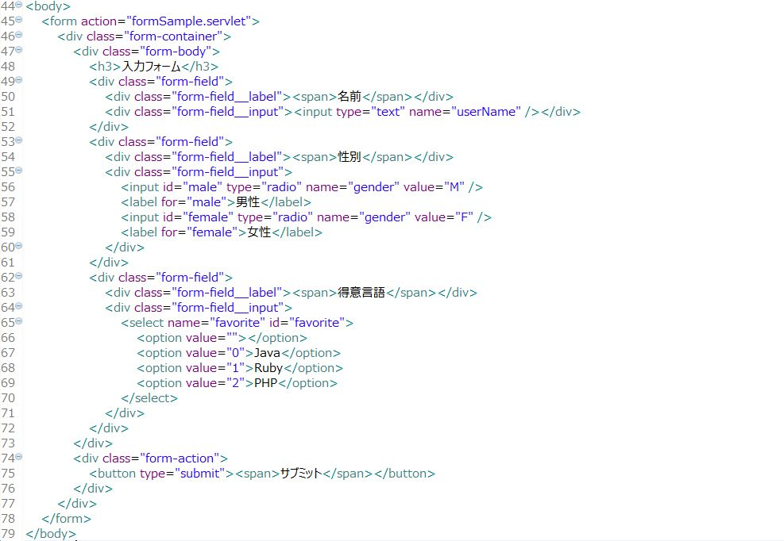
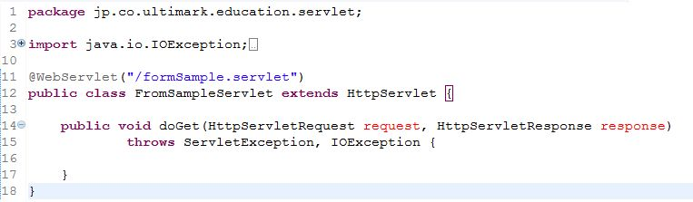
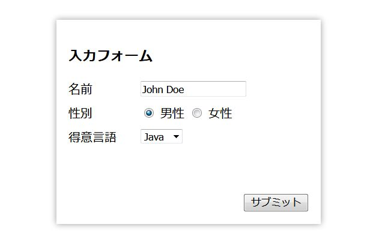
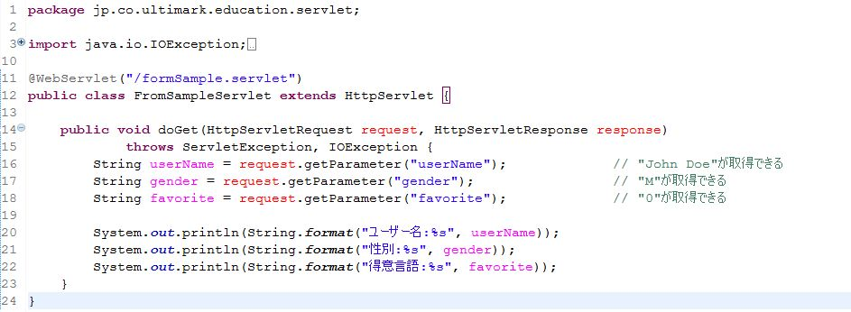
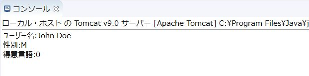
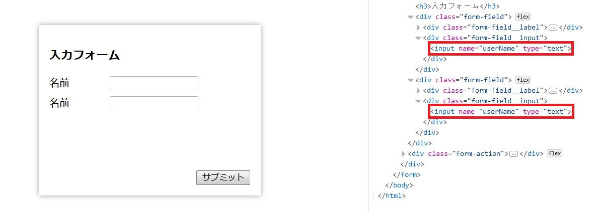
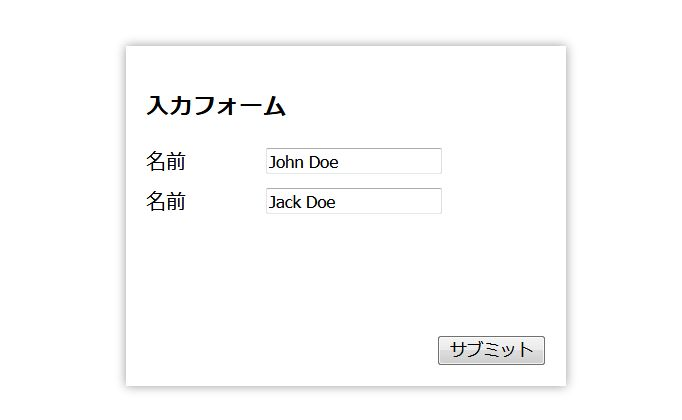
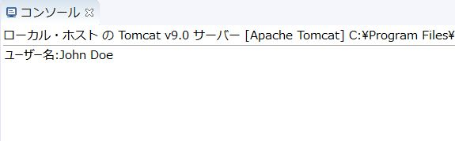
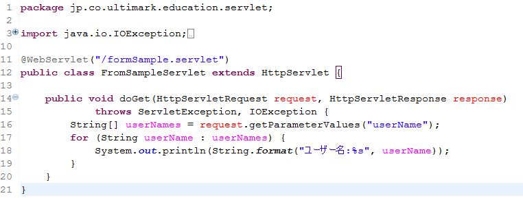
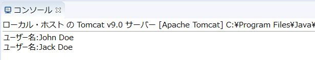

HTMLフォームとはformタグで囲われたHTML上のコンポーネントです。自身の内側に記述されたinput要素の値をリクエストパラメータとしてサーバーに送信する機能を持っています。リクエスト先のURLはformタグのaction属性で指定します。前回の記事でも解説したとおり、JSP（あるいはHTML）からサーブレットに値を連携する主要な手段です。今回はこのHTMLフォームとサーブレットの関連性について解説していきます。HTMLフォームの例を見てみましょう。
サーブレットと連携するためのHTMLフォームを作成する際に最も重要なのがformタグのaction属性です。このaction属性で指定した値とサーブレットが紐付くことになるからです。より具体的に説明すると、サーブレットに記述した@WebServletアノテーションの値と紐付くということになります。このHTMLフォームがサブミットされた際に呼び出されるサーブレットの雛形は以下のようになります。
formタグにおけるaction属性の値と@WebServletアノテーションの値に注目してください。先頭にスラッシュ（/）が付いているかどうかの違いはあるものの両者が一致していることが確認できると思います。
formタグにおけるaction属性に設定する値は自分自身から見た場合の相対パス、@WebServletアノテーションに設定する値はコンテキストルートからの相対パスという違いがあります。コンテキストルートとはWebアプリケーションの基点となるパスのことで、servlet-sampleというプロジェクトをローカル環境で動かす場合はhttp://localhost:8080/servlet-sampleがコンテキストルートとなります。formタグのアクション属性ではスラッシュが付かず、@WebServletアノテーションではスラッシュが付くという違いがあるのは相対パスの基点が違うから、ということになります。
HTMLフォームをサブミットするにはformタグの内側にbuttonタグを配置するか、inputタグのtype属性にsubmitを指定した要素を配置するかします。いずれの場合もinputタグのname属性で指定した値がパラメータ名、value属性の値がパラメータ値となってサーバーに送信されます。サーブレット側でこれらを取得するためには、request.getParameterメソッドを利用します。実例を見てみましょう。図は上記のJSPを実際に画面表示したものです。
サーブレット側でリクエストパラメータを取得する処理を追加します。
今回はパラメータの連携確認ですので、サーブレット側で取得したパラメータをそのまま標準出力に出力しています。実際に動作を確認してみましょう。
Eclipseのコンソールには上記のように出力されたと思います。実際に出力される値は、画面に表示されている値ではなくvalue属性の値であることに注意してください。性別は"男性"ではなく"M"が出力されますし、得意言語は"Java"ではなく"0"が出力されます。
リクエストパラメータはname属性の値によってパラメータ名を付け、value属性の値がパラメータ値になることが確認できました。それでは1つのフォームの中でname属性が重複した場合はどうなるでしょうか。実際にやってみましょう。JSPを修正します。
userNameというパラメータ名が重複しています。この2つの入力項目にそれぞれ別々の値を入力した場合どうなるのでしょうか。実験してみます。
サーブレットを修正して実行した結果が以下になります。
1つ目の入力値が反映されました。どうやらname属性が重複した場合、2つ目以降の入力値は無視されるようです。これでは困ったことになってしまいそうです。今回のように、inputタグをハードコーディングしているような場合はname01、name02のようにname属性の重複を防ぐような対策を講じることができますが、一覧形式でデータを表示し、行ごとに入力域があるような画面では連番で管理するのもなかなか大変です。このような場合はrequest.getParameterValuesが便利です。サーブレットを修正します。
request.getParameterValuesメソッドは引数で指定したパラメータ名を持つリクエストパラメータ値を全て取得し、結果をString型の配列で返します。こうすることで、一覧形式の入力フォームにも無理なく対応することができます。それでは修正したサーブレットで先ほどの操作を再実行してみましょう。
userNameという名前のリクエストパラメータ値を全て取得することができました。基本的にリクエストパラメータの取り扱いについてはイレギュラーな形にならない限りそれほど難しいことはありません。ただ、リクエストパラメータに限った話ではありませんが、JSPとサーブレットの連携はタイプセーフではなく、name属性の値とrequest.getParameterメソッドの引数の値が一致しないといったバグが入り込みやすいという点には注意が必要です。次回はサーブレットにおける画面遷移について解説していきます。